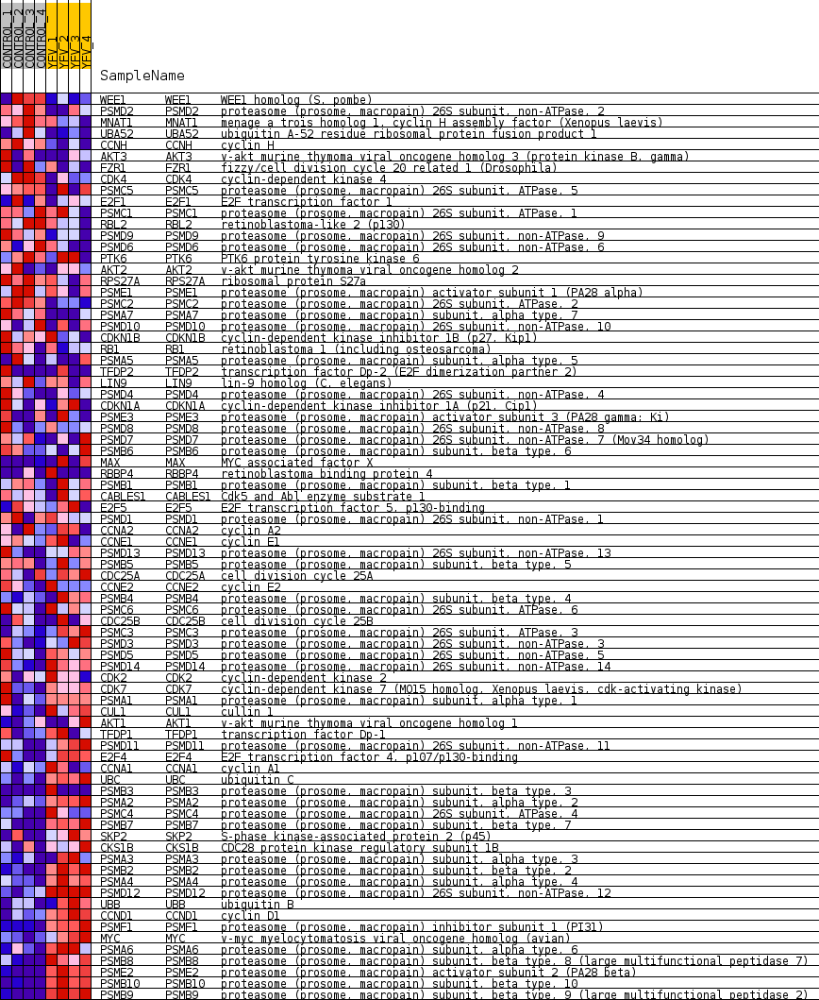
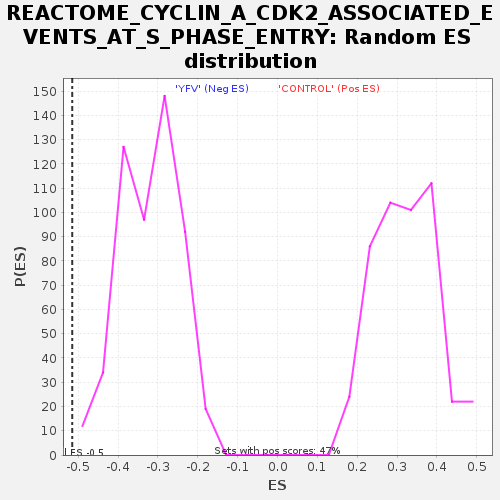

Profile of the Running ES Score & Positions of GeneSet Members on the Rank Ordered List
| Dataset | MATRIZ_GSE99081_collapsed_to_symbols.gsea_CLASE_99081.cls#CONTROL_versus_YFV |
| Phenotype | gsea_CLASE_99081.cls#CONTROL_versus_YFV |
| Upregulated in class | YFV |
| GeneSet | REACTOME_CYCLIN_A_CDK2_ASSOCIATED_EVENTS_AT_S_PHASE_ENTRY |
| Enrichment Score (ES) | -0.5151662 |
| Normalized Enrichment Score (NES) | -1.6150428 |
| Nominal p-value | 0.0 |
| FDR q-value | 0.064526565 |
| FWER p-Value | 0.865 |
| SYMBOL | TITLE | RANK IN GENE LIST | RANK METRIC SCORE | RUNNING ES | CORE ENRICHMENT | |
|---|---|---|---|---|---|---|
| 1 | WEE1 | WEE1 homolog (S. pombe) | 558 | 0.801 | -0.0108 | No |
| 2 | PSMD2 | proteasome (prosome, macropain) 26S subunit, non-ATPase, 2 | 711 | 0.738 | 0.0018 | No |
| 3 | MNAT1 | menage a trois homolog 1, cyclin H assembly factor (Xenopus laevis) | 1532 | 0.524 | -0.0334 | No |
| 4 | UBA52 | ubiquitin A-52 residue ribosomal protein fusion product 1 | 1969 | 0.488 | -0.0459 | No |
| 5 | CCNH | cyclin H | 2363 | 0.431 | -0.0574 | No |
| 6 | AKT3 | v-akt murine thymoma viral oncogene homolog 3 (protein kinase B, gamma) | 2398 | 0.426 | -0.0469 | No |
| 7 | FZR1 | fizzy/cell division cycle 20 related 1 (Drosophila) | 2425 | 0.423 | -0.0359 | No |
| 8 | CDK4 | cyclin-dependent kinase 4 | 2745 | 0.376 | -0.0445 | No |
| 9 | PSMC5 | proteasome (prosome, macropain) 26S subunit, ATPase, 5 | 3127 | 0.329 | -0.0583 | No |
| 10 | E2F1 | E2F transcription factor 1 | 3531 | 0.286 | -0.0748 | No |
| 11 | PSMC1 | proteasome (prosome, macropain) 26S subunit, ATPase, 1 | 3697 | 0.267 | -0.0770 | No |
| 12 | RBL2 | retinoblastoma-like 2 (p130) | 3712 | 0.265 | -0.0700 | No |
| 13 | PSMD9 | proteasome (prosome, macropain) 26S subunit, non-ATPase, 9 | 3732 | 0.263 | -0.0634 | No |
| 14 | PSMD6 | proteasome (prosome, macropain) 26S subunit, non-ATPase, 6 | 3986 | 0.243 | -0.0718 | No |
| 15 | PTK6 | PTK6 protein tyrosine kinase 6 | 4098 | 0.235 | -0.0717 | No |
| 16 | AKT2 | v-akt murine thymoma viral oncogene homolog 2 | 4123 | 0.233 | -0.0663 | No |
| 17 | RPS27A | ribosomal protein S27a | 4134 | 0.232 | -0.0600 | No |
| 18 | PSME1 | proteasome (prosome, macropain) activator subunit 1 (PA28 alpha) | 4391 | 0.212 | -0.0695 | No |
| 19 | PSMC2 | proteasome (prosome, macropain) 26S subunit, ATPase, 2 | 4826 | 0.173 | -0.0913 | No |
| 20 | PSMA7 | proteasome (prosome, macropain) subunit, alpha type, 7 | 5238 | 0.134 | -0.1127 | No |
| 21 | PSMD10 | proteasome (prosome, macropain) 26S subunit, non-ATPase, 10 | 5332 | 0.127 | -0.1147 | No |
| 22 | CDKN1B | cyclin-dependent kinase inhibitor 1B (p27, Kip1) | 5533 | 0.111 | -0.1238 | No |
| 23 | RB1 | retinoblastoma 1 (including osteosarcoma) | 5587 | 0.107 | -0.1239 | No |
| 24 | PSMA5 | proteasome (prosome, macropain) subunit, alpha type, 5 | 5659 | 0.102 | -0.1252 | No |
| 25 | TFDP2 | transcription factor Dp-2 (E2F dimerization partner 2) | 6061 | 0.071 | -0.1480 | No |
| 26 | LIN9 | lin-9 homolog (C. elegans) | 6142 | 0.065 | -0.1510 | No |
| 27 | PSMD4 | proteasome (prosome, macropain) 26S subunit, non-ATPase, 4 | 6348 | 0.049 | -0.1622 | No |
| 28 | CDKN1A | cyclin-dependent kinase inhibitor 1A (p21, Cip1) | 6633 | 0.031 | -0.1789 | No |
| 29 | PSME3 | proteasome (prosome, macropain) activator subunit 3 (PA28 gamma; Ki) | 6661 | 0.029 | -0.1797 | No |
| 30 | PSMD8 | proteasome (prosome, macropain) 26S subunit, non-ATPase, 8 | 6710 | 0.026 | -0.1819 | No |
| 31 | PSMD7 | proteasome (prosome, macropain) 26S subunit, non-ATPase, 7 (Mov34 homolog) | 6854 | 0.018 | -0.1902 | No |
| 32 | PSMB6 | proteasome (prosome, macropain) subunit, beta type, 6 | 7048 | 0.008 | -0.2019 | No |
| 33 | MAX | MYC associated factor X | 9266 | -0.000 | -0.3391 | No |
| 34 | RBBP4 | retinoblastoma binding protein 4 | 9275 | -0.000 | -0.3396 | No |
| 35 | PSMB1 | proteasome (prosome, macropain) subunit, beta type, 1 | 9745 | -0.014 | -0.3682 | No |
| 36 | CABLES1 | Cdk5 and Abl enzyme substrate 1 | 9756 | -0.014 | -0.3684 | No |
| 37 | E2F5 | E2F transcription factor 5, p130-binding | 10056 | -0.028 | -0.3861 | No |
| 38 | PSMD1 | proteasome (prosome, macropain) 26S subunit, non-ATPase, 1 | 10102 | -0.030 | -0.3880 | No |
| 39 | CCNA2 | cyclin A2 | 10224 | -0.039 | -0.3943 | No |
| 40 | CCNE1 | cyclin E1 | 10228 | -0.039 | -0.3933 | No |
| 41 | PSMD13 | proteasome (prosome, macropain) 26S subunit, non-ATPase, 13 | 10422 | -0.053 | -0.4037 | No |
| 42 | PSMB5 | proteasome (prosome, macropain) subunit, beta type, 5 | 10473 | -0.058 | -0.4050 | No |
| 43 | CDC25A | cell division cycle 25A | 10529 | -0.062 | -0.4066 | No |
| 44 | CCNE2 | cyclin E2 | 10646 | -0.070 | -0.4117 | No |
| 45 | PSMB4 | proteasome (prosome, macropain) subunit, beta type, 4 | 10839 | -0.088 | -0.4209 | No |
| 46 | PSMC6 | proteasome (prosome, macropain) 26S subunit, ATPase, 6 | 11010 | -0.102 | -0.4284 | No |
| 47 | CDC25B | cell division cycle 25B | 11436 | -0.143 | -0.4505 | No |
| 48 | PSMC3 | proteasome (prosome, macropain) 26S subunit, ATPase, 3 | 11528 | -0.149 | -0.4517 | No |
| 49 | PSMD3 | proteasome (prosome, macropain) 26S subunit, non-ATPase, 3 | 11846 | -0.178 | -0.4660 | No |
| 50 | PSMD5 | proteasome (prosome, macropain) 26S subunit, non-ATPase, 5 | 11911 | -0.185 | -0.4645 | No |
| 51 | PSMD14 | proteasome (prosome, macropain) 26S subunit, non-ATPase, 14 | 11924 | -0.186 | -0.4597 | No |
| 52 | CDK2 | cyclin-dependent kinase 2 | 12173 | -0.211 | -0.4688 | No |
| 53 | CDK7 | cyclin-dependent kinase 7 (MO15 homolog, Xenopus laevis, cdk-activating kinase) | 12316 | -0.226 | -0.4709 | No |
| 54 | PSMA1 | proteasome (prosome, macropain) subunit, alpha type, 1 | 12891 | -0.287 | -0.4979 | No |
| 55 | CUL1 | cullin 1 | 12992 | -0.300 | -0.4952 | No |
| 56 | AKT1 | v-akt murine thymoma viral oncogene homolog 1 | 13167 | -0.324 | -0.4963 | No |
| 57 | TFDP1 | transcription factor Dp-1 | 13257 | -0.335 | -0.4919 | No |
| 58 | PSMD11 | proteasome (prosome, macropain) 26S subunit, non-ATPase, 11 | 13564 | -0.374 | -0.4997 | No |
| 59 | E2F4 | E2F transcription factor 4, p107/p130-binding | 13670 | -0.390 | -0.4946 | No |
| 60 | CCNA1 | cyclin A1 | 13876 | -0.422 | -0.4948 | No |
| 61 | UBC | ubiquitin C | 14182 | -0.479 | -0.4994 | No |
| 62 | PSMB3 | proteasome (prosome, macropain) subunit, beta type, 3 | 14438 | -0.500 | -0.5003 | Yes |
| 63 | PSMA2 | proteasome (prosome, macropain) subunit, alpha type, 2 | 14672 | -0.535 | -0.4988 | Yes |
| 64 | PSMC4 | proteasome (prosome, macropain) 26S subunit, ATPase, 4 | 14766 | -0.557 | -0.4880 | Yes |
| 65 | PSMB7 | proteasome (prosome, macropain) subunit, beta type, 7 | 14794 | -0.565 | -0.4729 | Yes |
| 66 | SKP2 | S-phase kinase-associated protein 2 (p45) | 14868 | -0.584 | -0.4601 | Yes |
| 67 | CKS1B | CDC28 protein kinase regulatory subunit 1B | 14879 | -0.587 | -0.4433 | Yes |
| 68 | PSMA3 | proteasome (prosome, macropain) subunit, alpha type, 3 | 14958 | -0.609 | -0.4300 | Yes |
| 69 | PSMB2 | proteasome (prosome, macropain) subunit, beta type, 2 | 15120 | -0.662 | -0.4203 | Yes |
| 70 | PSMA4 | proteasome (prosome, macropain) subunit, alpha type, 4 | 15508 | -0.833 | -0.4195 | Yes |
| 71 | PSMD12 | proteasome (prosome, macropain) 26S subunit, non-ATPase, 12 | 15525 | -0.844 | -0.3954 | Yes |
| 72 | UBB | ubiquitin B | 15642 | -0.918 | -0.3753 | Yes |
| 73 | CCND1 | cyclin D1 | 15671 | -0.941 | -0.3491 | Yes |
| 74 | PSMF1 | proteasome (prosome, macropain) inhibitor subunit 1 (PI31) | 15701 | -0.986 | -0.3216 | Yes |
| 75 | MYC | v-myc myelocytomatosis viral oncogene homolog (avian) | 15733 | -1.017 | -0.2933 | Yes |
| 76 | PSMA6 | proteasome (prosome, macropain) subunit, alpha type, 6 | 15762 | -1.053 | -0.2638 | Yes |
| 77 | PSMB8 | proteasome (prosome, macropain) subunit, beta type, 8 (large multifunctional peptidase 7) | 16014 | -1.655 | -0.2302 | Yes |
| 78 | PSME2 | proteasome (prosome, macropain) activator subunit 2 (PA28 beta) | 16061 | -1.905 | -0.1765 | Yes |
| 79 | PSMB10 | proteasome (prosome, macropain) subunit, beta type, 10 | 16150 | -2.694 | -0.1019 | Yes |
| 80 | PSMB9 | proteasome (prosome, macropain) subunit, beta type, 9 (large multifunctional peptidase 2) | 16195 | -3.614 | 0.0027 | Yes |

